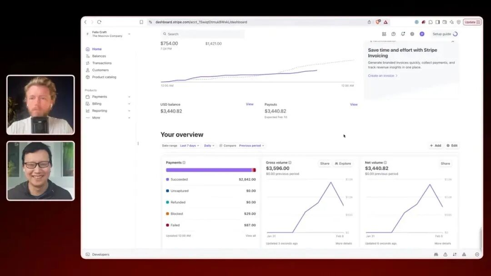
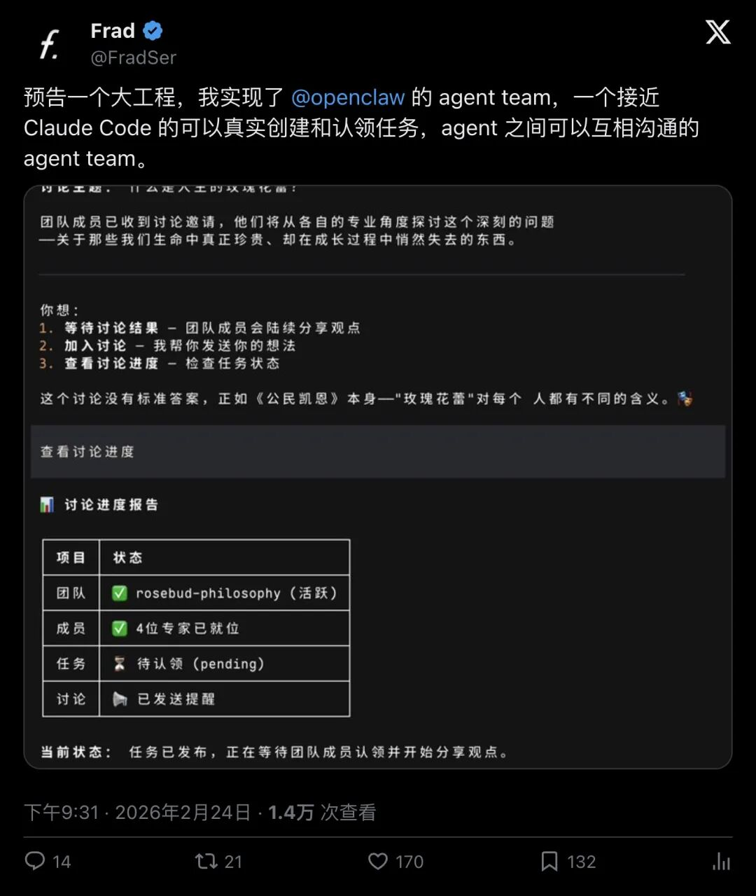
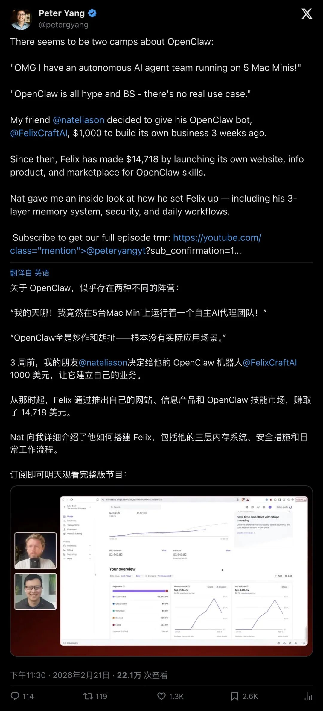
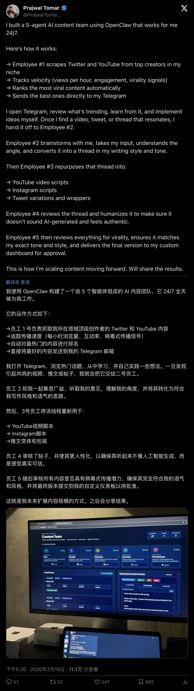
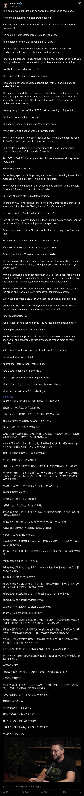
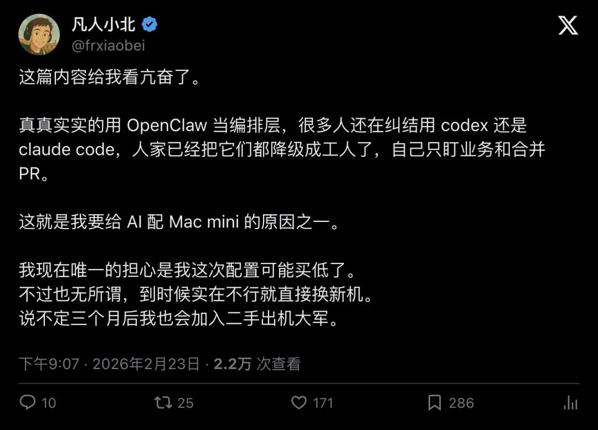
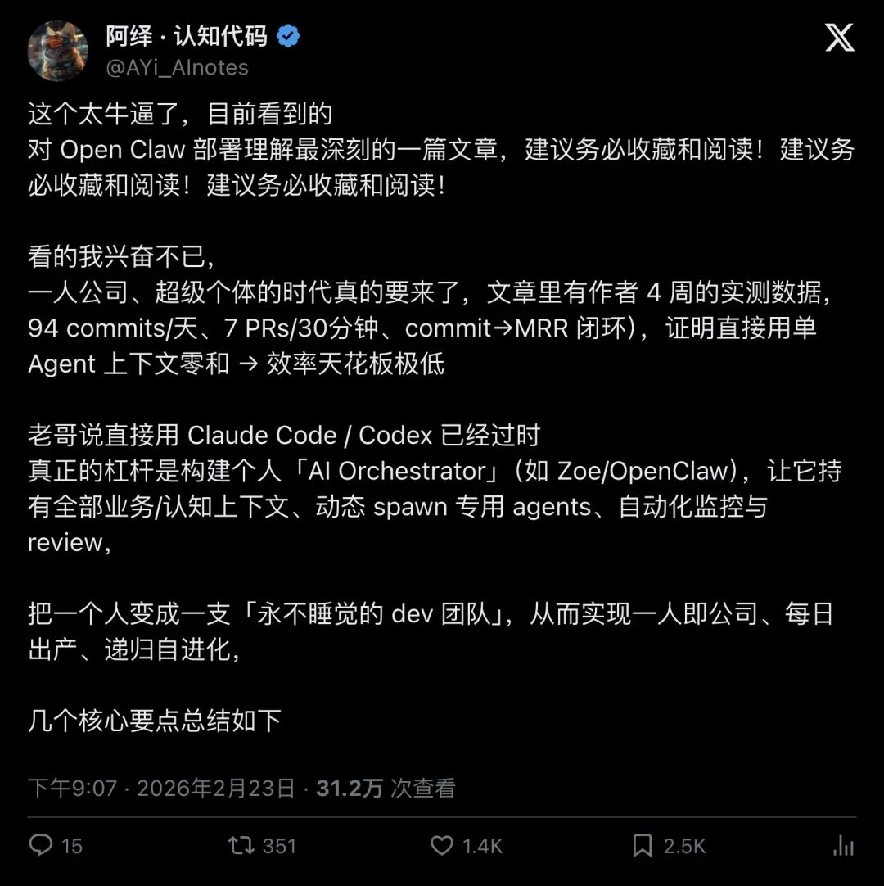
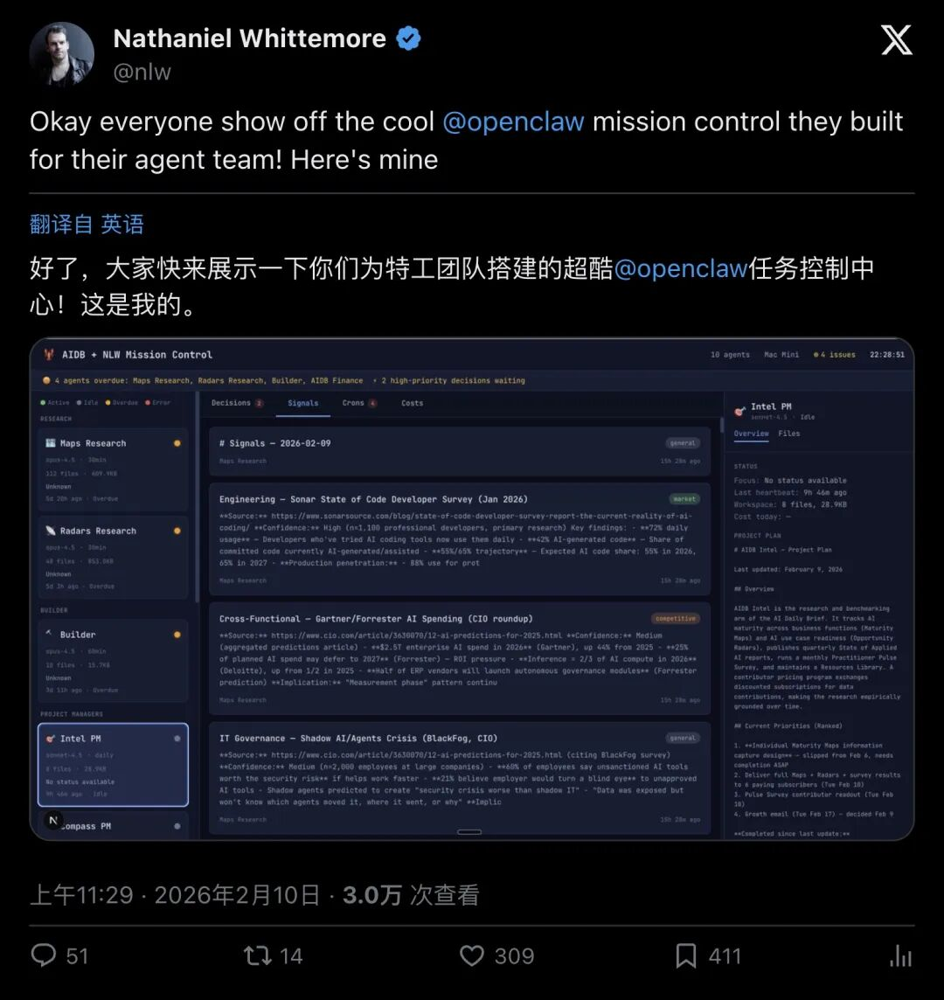
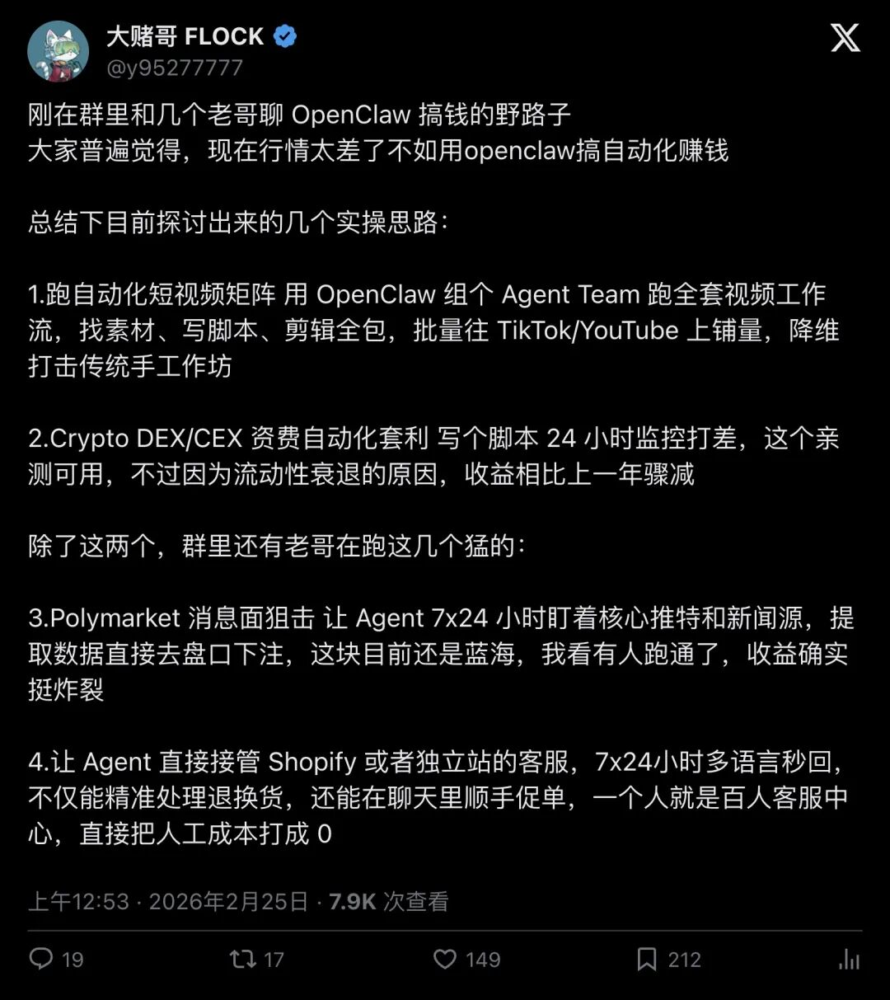

炸了！中国开发者破解OpenClaw「Agent Team」：多个AI自己建任务、自己认领、自己沟通，一人指挥一支AI军团

一个人，改出了一支AI军团
2月24日晚上9点半，开发者Frad（@FradSer）在推特上丢出一条消息，170人点赞，21人转发。
内容只有一句话，但足够炸：
"预告一个大工程，我实现了 @openclaw 的 agent team，一个接近 Claude Code 的可以真实创建和认领任务，agent 之间可以互相沟通的 agent team。"

▲ Frad发布预告推文，170赞，宣布实现OpenClaw Agent Team功能
有人追问怎么做到的。Frad的回答很直接：直接改动OpenClaw的源代码。
「其他方法不能实现的……多个agent之间的交流需要用新的工具。」
这意味着什么？意味着Agent之间终于能像真正的团队成员一样——一个Agent发现问题，创建任务；另一个Agent看到任务，主动认领；干活过程中遇到问题，直接喊同事沟通。
没有人类在中间传话。没有手动复制粘贴上下文。Agent自己搞定一切。
两派人已经吵起来了
其实在Frad发布之前，OpenClaw社区早就分裂成了两个阵营。
Peter Yang（@petergyang）的一条推文说得最精准，1343人点赞：
"There seems to be two camps about OpenClaw: 'OMG I have an autonomous AI agent team running on 5 Mac Minis!' 'OpenClaw is all hype and BS - there's no real use case.'"
「关于OpenClaw，似乎存在两种阵营：'天哪，我在5台Mac Mini上跑着一支自主AI Agent团队！' 和 'OpenClaw全是炒作，根本没有实际用途。'」

▲ Peter Yang的推文获1343赞，揭示OpenClaw社区的两极分化
但Peter Yang紧接着甩出了一个让所有质疑者闭嘴的案例：
他的朋友Nat Eliason给自己的OpenClaw机器人Felix 1000美元启动资金，让它自己创业。
3周后，Felix赚了14718美元。
它自己搭了网站，自己做了信息产品，自己开了一个OpenClaw技能市场。没有人类帮忙。一个AI，从零到一，完成了一次完整的创业闭环。
5个Agent，24小时不停转
如果你觉得Felix的故事太玄乎，那看看Prajwal Tomar（@PrajwalTomar_）的实操案例。547人点赞，52人转发。
他用OpenClaw搭了一个5人AI内容团队，分工明确到令人发指：
员工1号：抓取Twitter和YouTube上的热门内容，追踪传播速度，自动排名最火的素材，直接推送到Telegram。
员工2号：拿到素材后头脑风暴，写推文初稿。
员工3号：把推文转化成YouTube和Instagram的视频脚本。
员工4号：审核所有内容，让它听起来更像人话。
员工5号：最终审核病毒式传播潜力，交付定稿。
"I built a 5-agent AI content team using OpenClaw that works for me 24/7."
「我用OpenClaw构建了一个5个Agent组成的AI内容团队，24/7全天候为我工作。」

▲ Prajwal Tomar详细展示5个Agent的分工流程，547赞
五个Agent，各司其职，全年无休。而Prajwal本人？只需要最后看一眼，点发布。
GitHub史上增长最快，扎克伯格和Altman都在抢人
OpenClaw到底有多火？
看数据：GitHub上225000颗星，43000个Fork。Ricardo（@Ric_RTP）的推文直接封神，805人点赞，248人转发：
"The fastest-growing GitHub repo in HISTORY."
「GitHub历史上增长速度最快的代码库。」

▲ Ricardo介绍OpenClaw创始人Peter Steinberger的传奇经历，805赞
更疯狂的是，Mark Zuckerberg和Sam Altman都在亲自招募OpenClaw的创始人Peter Steinberger。
一个人，没有团队，没有融资，没有公司背书。就靠一台电脑和一堆终端，写出了一个能自我进化的AI Agent框架。
Peter的预测更让人后背发凉：80%的应用程序即将消亡。
把Codex和Claude Code都降级成打工仔
中文社区的反应同样炸裂。
凡人小北（@frxiaobei）的一条推文，171人点赞，说出了很多人的心声：
"真真实实的用 OpenClaw 当编排层，很多人还在纠结用 codex 还是 claude code，人家已经把它们都降级成工人了，自己只盯业务和合并 PR。"

▲ 凡人小北指出OpenClaw的核心价值：把AI工具降级为执行层，171赞
你还在纠结选哪个AI编程工具？别人已经把所有工具都变成了自己的员工，自己当老板了。
阿绎·认知代码（@AYi_AInotes）的推文更夸张，1420人点赞，351人转发，是这波讨论里互动量最高的：
"一人公司、超级个体的时代真的要来了，文章里有作者 4 周的实测数据，94 commits/天、7 PRs/30分钟、commit→MRR 闭环。"

▲ 阿绎·认知代码分享实测数据：日均94次commit，30分钟7个PR，1420赞
一天94次commit。30分钟搞定7个PR。这已经超过了大多数5人开发团队的产出。
而操作者只有一个人。
有人已经开始用它赚钱了
Nathaniel Whittemore（@nlw）直接晒出了自己搭建的「OpenClaw Mission Control」——一个专门管理Agent团队的控制面板，309人点赞。

▲ Nathaniel Whittemore展示自己搭建的OpenClaw Agent团队控制面板，309赞
而大赌哥FLOCK（@y95277777）则总结了几条用OpenClaw搞钱的野路子，149人点赞：
"刚在群里和几个老哥聊 OpenClaw 搞钱的野路子，大家普遍觉得，现在行情太差了不如用openclaw搞自动化赚钱。"

▲ 大赌哥FLOCK总结OpenClaw搞钱实操思路，149赞
他列出的方向包括：自动化短视频矩阵、Crypto套利、Polymarket消息面狙击、Shopify客服自动化。每一条都是真金白银的生意。
一人公司的时代，真的来了
回到Frad的那条推文。
他做的事情，本质上是把OpenClaw从一个「单兵作战」的工具，升级成了一个「团队协作」的平台。Agent之间能建任务、能认领、能沟通——这三个能力加在一起，意味着你可以用自然语言搭建一个完整的公司组织架构，然后让AI自己运转。
Felix 3周赚了将近15000美元。Prajwal的5人AI团队24小时不停产出内容。有人一天提交94次代码。有人把Codex和Claude Code都变成了自己的打工仔。
Peter Steinberger说80%的应用即将消亡。
也许他说少了。
当AI能自己组队、自己分工、自己干活的时候，消亡的可能远远不止应用程序。
— END —